Lゴジラ
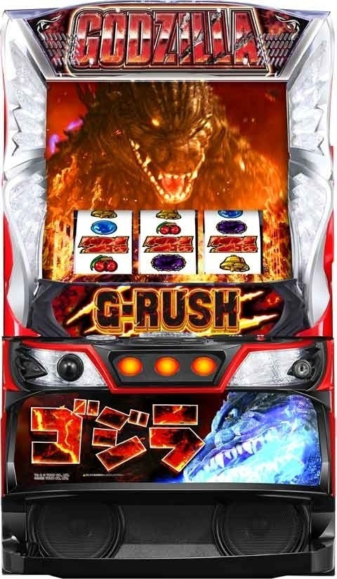
【天井情報】
1000PT CZ当選
AT間天井 2500G（500/1000/1500/2500のいずれに振り分け） 襲来ゾーンを経由してAT当選（リセット時 1000G）
【リセット判別】
インファント島ステージやめで据置だと翌日もインファント島ステージから。
またはメダルを入れなくても画面復帰中の画面だと据置濃厚。
※インファント島ステージやめの据置でも画面復帰中ではないケース多数あり。リセ据置判別に使えない？
※画面復帰中→据置濃厚 通常待機画面→リセ据置判断不可
【有利区間について】
差枚数やエンディング等で有利区間がリセットされた場合は「Gリバース」に突入し上位AT突入のチャンス。
狙い目
【リセット狙い】
AT間 70Gから
【AT間天井狙い】
・朝一AT間天井後 0Gから
※朝一AT間天井後（1000G越え）は0スルー時のCZ突破率ほぼ100％
・朝一以外AT間天井後 0スルー 80ptから
※朝一以外のAT間天井後（2500G越え）は同様ではないが１回目の突破率が高めの傾向（0からは辛そう）
・下位AT後 1900Gから（CZ間0G想定）
・上位AT後
積極派 0GからAT当選まで（コイン単価が現行機種トップクラスのため、かなり荒れる）。換金ギャップ発生するケースでは非推奨。上位AT後のAT後狙いも考慮して0Gから打っていく感じ。
慎重派 CZ間100pt以上ハマってたらCZ当選まで。またはAT間300G以上でAT当選まで。
※上位AT後の恩恵は１回目のCZ区間はモードB以上かつビオランテ以上。更にAT間1000G以上ハマると次回CZでAT確定？500Gや700Gあたりに仮天もありそう。
【上位AT後のAT後狙い】
上位AT後、499G以内にAT当選後は次回1回目のCZ突破率が高くなっています。
上位AT後
AT間 200-499GでAT当選後 0ptからCZ当選まで （CZ突破率75-80％前後）
AT間 0-199GでAT当選後 200ptからCZ当選まで （CZ突破率70％前後）
スロ塾メンバーのはる坊さんが発見した狙い目になりますので、この狙い目を拾えた人は是非noteを購入しましょうw
【CZ間天井狙い】
0スルー 500ptから
朝一AT間200から499G以内にAT当選した台 0スルー 200ptからCZ当選まで
1スルー以降（メニュー画面やモニター演出である程度モード推測出来る）
モードB以上示唆なし 600ptから
モードB以上示唆あり 500ptから
モードB以上濃厚 400ptから
モードC以上濃厚 （朝一のみ弱い）
積極派 0ptから
慎重派 80ptから
上位AT後(CZ間単体で狙う場合） 120ptから
前回AT駆け抜け後(獲得枚数200枚以下目安）0スルーのみ 90ptから
前回実ゲーム数でモードC天井狙い→モードC天井までC抜けの場合は示唆で押し引き
・目視で1000pt天井確認後 0ptからCZ当選まで
・700G以上ハマリ後（1000pt到達後想定） 100ptからC天井抜けまで
・630G以上ハマリ後（1000pt到達可能性高め想定） 300ptからC天井抜けまで
次回天国濃厚時 ボーダーを300-400pt下げる
※Gリバース（上位CZ）終了後はモードB以上濃厚（上位後または有利切れ後はモードB以上）
※1000pt到達後は次回モードC以上濃厚。CZ成功時も有効。（有利切れ時は無効）
※上位後同様、朝一もAT間499以内に当選した台は0スルーのCZ突破率が優遇傾向
【ゾーン狙い】
メニュー画面が絡むケース以外でゾーン狙いはほぼ出来ない。
モードAは200/400/600で警戒体制モードに移行しやすい。
モードBは300/500で警戒体制モードに移行しやすい。
【メニュー画面狙い】
メニュー画面ゴジラはデフォルト。ヘリや戦車などは設定示唆のため説明は割愛。
デストロイア CZ当選まで
UFO、キングギドラ 天国まで（天国は100ptのゾーン）
ラドン、ビオランテ(1/3で天国） 50ptから天国確認まで
ガイガン 2回中1回天国あり。天国確認まで
モスラ 6回中3回天国あり。天国確認まで
ゴジラVSビオランテ 300ptからCZ当選まで
ゴジラVSデストロイア CZ当選まで
ゴジラVSキングギドラ CZ当選まで
【液晶右上モニター狙い】
モスラ（モードC以上濃厚と同様）
咆哮ガメラ（天国濃厚）天国まで
【オペレーターセリフ狙い】
天井500G以内、規定G-POINT残り300以内、蓄積リプレイポイント130以上は続行？
天井1000G以内は900G以内にAT間天井が見込める様ならAT当選まで
【探索ゾーン終了時のセリフ狙い】
モードC以上濃厚 CZ間天井狙いを参照
「巨大な生命反応です」 天国まで
【ステージ狙い】
火山ステージは100pt以内のためCZ当選まで
豪雪ステージは500pt以内のためCZ当選まで（実践上、当選が近いほど出現しやすい）
【有利区間関連狙い】
不明
やめ時
AT終了後即やめ。
AT後引き戻す事がある。即前兆が発生するのか、ヴァルヴレイヴの様にいきなり引き戻すのか不明。
引き戻し確率は4％前後？
インファント島ステージ中に強レア役でCZ当選や、前回本前兆中にブレイクダウン当選しているとインファント島ステージ抜け時にCZやブレイクダウンが出てくると思われる。恐らく探索モードより先に出てくる？
現状は即やめされてるケースが多い。上位後インファント島ステージ中にAT当選すれば上位ATに復帰する感じ？
その他
データ履歴
RBはCZ
下記履歴でART20:56、21:26の様に途中から0以外の2-6GでART信号上がっている履歴は上位AT突入の信号と思われる。
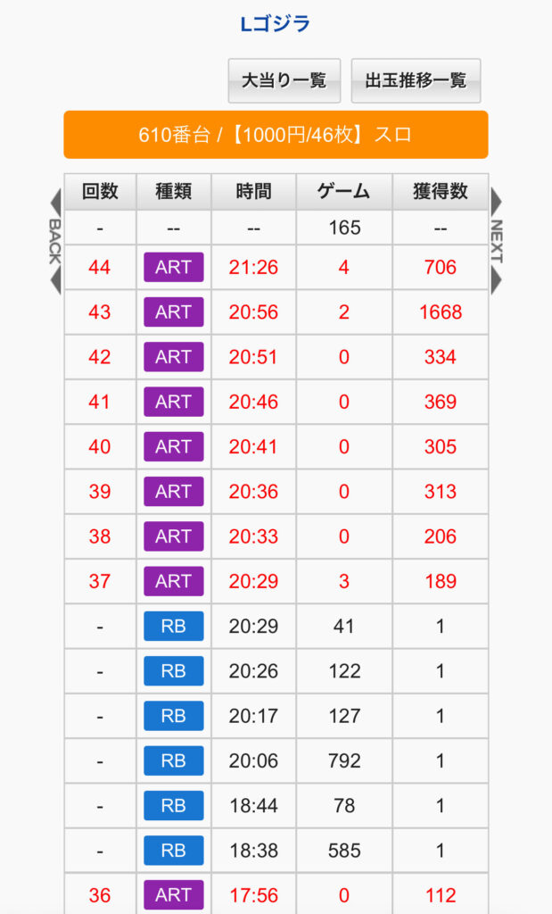
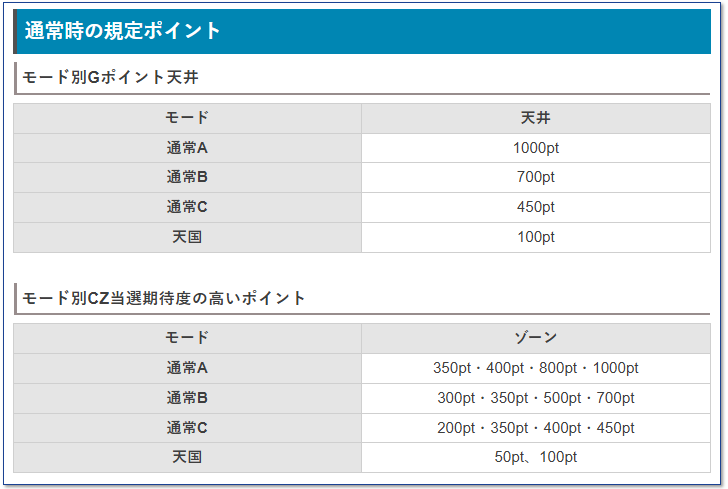
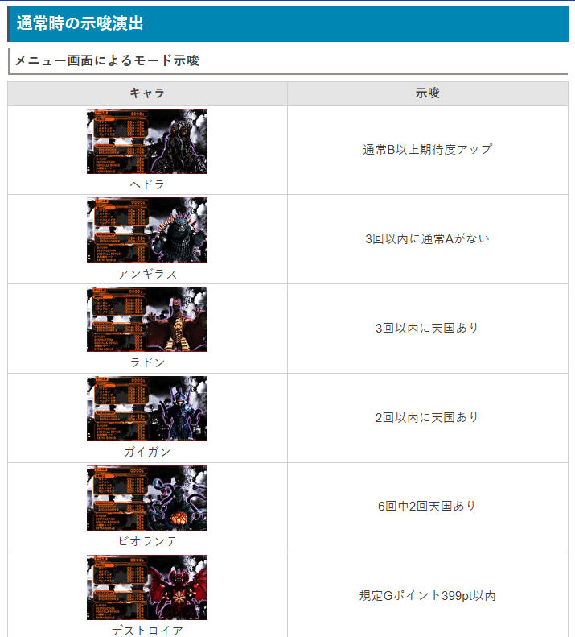
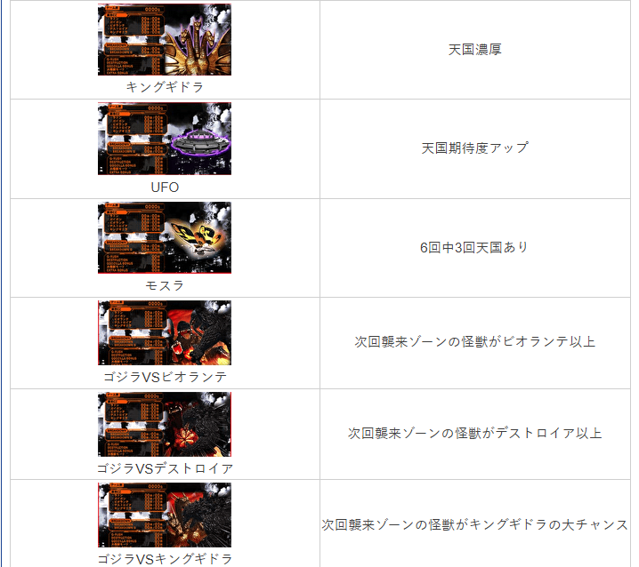
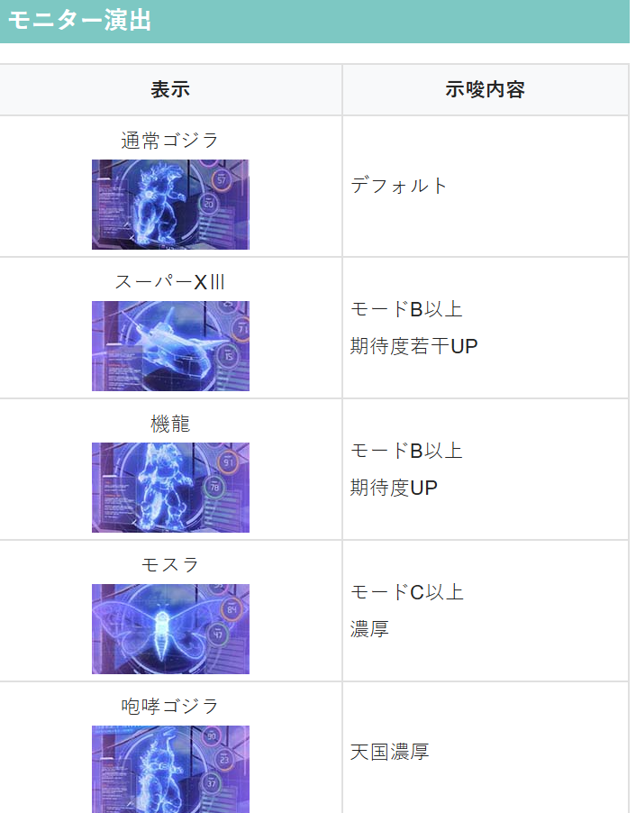
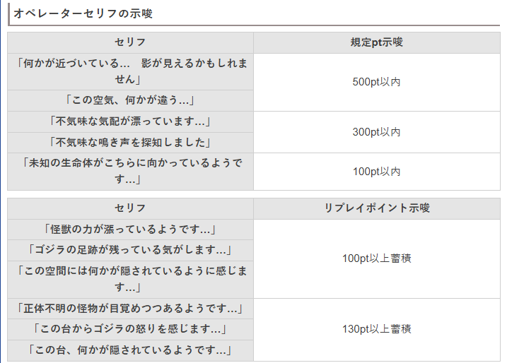
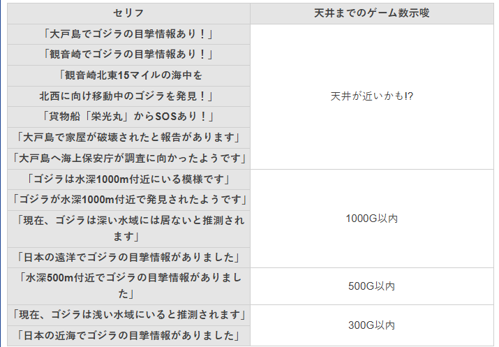
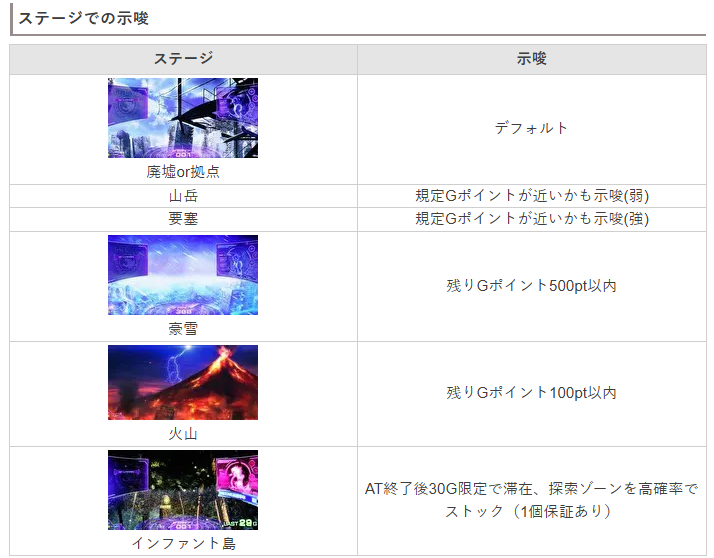
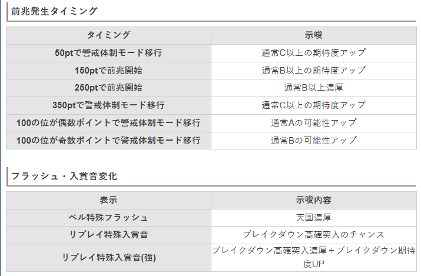
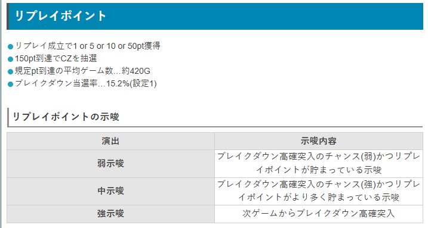
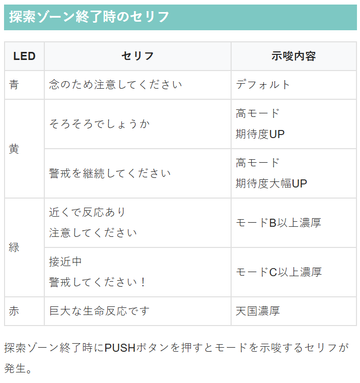
参考元
基本情報
- メーカー: ニューギン
- 機械割: 97.8% 〜 114.9%
- 導入開始日: 2025年04月07日（月）
- ゲーム性概要: ●通常時は2種類のCZを契機にATを目指すゲーム性 ●CZは規定Gポイント・レア役・リプレイポイントで抽選 ●ATは純増役5.0枚のゲーム数管理型 ●払い出し枚数で進む5つのステージをクリアすれば上位AT突入濃厚（エンディング後を除く） ●上位ATは上乗せ性能が大幅にアップ ●上位AT終了後はGリバースで引き戻しのチャンスあり！


打ち方
打ち方・小役
通常時の打ち方
「最初に狙う絵柄」 左リール上段付近にBARを狙う（赤7でもOK）。中右リールは取りこぼしがないので、フリー打ちでOKだ。

「レア役の停止形」

変則押しはNG
通常時・押し順ナビなし時は左リール第1停止での消化を推奨する。

リール制御
リプレイ以上の1確目
上記の停止形は、リプレイorチャンスリプレイorチャンス目のいずれかが濃厚。AT中のCZやGリバースなど、本機にはリプレイ以上成立で恩恵獲得となるケースが多いため、第1停止で嬉しい瞬間を察知することができる。 ちなみに、リプレイ以上で恩恵獲得となるタイミングで上記出目が停止した場合、サウンドと中パネルでの告知が発生する。

解析情報通常時
小役関連
小役確率
| 役 | 確率 |
|---|---|
| リプレイ | 1/7.7 |
| 3枚ベル | 1/13.8 （AT中は1/7.1） |
| 12枚ベル | 1/1.7 （AT中のみ） |
| 押し順チャンスリプレイ | 1/44.5 |
| 共通チャンスリプレイ1 | 1/199.8 |
| 共通チャンスリプレイ2 | 1/655.4 |
| 強チャンスリプレイ | 1/4096.0 |
| 弱チェリー | 1/65.1 |
| 強チェリー | 1/399.6 |
| チャンス目 | 1/256.0 |
| レア役合算 | 1/35.0 |
| リプレイ＆レア役合算 | 1/6.3 |
小役確率に設定差はなし。チャンスリプレイは合算すると約1/35になる。
リールロック発生率
| 役 | 1段階 | 2段階 |
|---|---|---|
| チャンスリプレイ | 4.7% | ー |
| 強チャンスリプレイ | 25.0% | 25.0% |
| チャンス目 | 12.5% | 2.3% |
| 弱チェリー | ー | ー |
| 強チェリー | 12.5% | 2.3% |
非有利区間や前兆中では見た目上リールロックは発生しないが、内部的にはリールロック抽選がおこなわれている。
［リールロック2段階以外］CZ当選率
| 役 | 襲来ゾーン | ブレイクダウン |
|---|---|---|
| チャンスリプレイ | ー | 0.4% |
| 強チャンスリプレイ | 10.2% | 39.8% |
| チャンス目 | 0.4% | ー |
| 弱チェリー | ー | ー |
| 強チェリー | 2.3% | ー |
［リールロック2段階］CZ当選率
| 役 | 襲来ゾーン | ブレイクダウン |
|---|---|---|
| チャンスリプレイ | ー | ー |
| 強チャンスリプレイ | ー | 100% |
| チャンス目 | 50.0% | ー |
| 弱チェリー | ー | ー |
| 強チェリー | 50.0% | ー |
リールロック2段階は強レア役濃厚かつ、CZ当選期待度も高い。
［小役以外契機］探索ゾーン当選率
| 契機 | 当選率 |
|---|---|
| 有利区間移行時 | 7.0% |
| 襲来ゾーン失敗時 | 7.0% |
| AT終了時 | 7.0% |
小役以外での当選率は高くないが、朝イチや襲来ゾーン・AT終了後も探索ゾーンに突入する可能性がある。
［小役契機］探索ゾーン当選率
| 役 | 当選率 |
|---|---|
| チャンスリプレイ | 25.0% |
| 強チャンスリプレイ | 100% |
| チャンス目 | 50.0% |
| 弱チェリー | 10.2% |
| 強チェリー | 66.4% |
中段チェリーの恩恵
中段チェリー成立時は逆押しナビが発生。AT直撃かつ、一部でロングフリーズが発生する。


モード
通常モード概要
通常時のモードは4種類で、滞在モードに応じてアツいゾーンや天井が変化。5回分のモードを 先決めで抽選 しているため、通常時の演出に次回や次次回のモードを示唆するパターンがある。
Gポイント1000pt到達後は次回モードが通常C以上などの救済要素はあるが、基本的には先決めしたモードをすべて消化or有利区間がリセットされるまで再抽選はされない。
モードごとの天井ポイント
| モード | 天井 |
|---|---|
| 通常A | 1000pt |
| 通常B | 700pt |
| 通常C | 450pt |
| 天国 | 100pt |
モードごとの期待できるゾーン（ポイント）
| モード | ゾーン |
|---|---|
| 通常A | 350pt、400pt、800pt、1000pt（天井） |
| 通常B | 300pt、350pt、500pt、700pt（天井） |
| 通常C | 200pt、350pt、400pt、450pt（天井） |
| 天国 | 50pt、100pt（天井） |
［設定変更時］初回モード移行率
| 役 | 通常C | 天国 |
|---|---|---|
| 下記以外 | 96.9% | 3.1% |
| チャンスリプレイ | 60.2% | 39.8% |
| 強チャンスリプレイ | ー | 100% |
| チャンス目 | ー | 100% |
| 弱チェリー | 60.2% | 39.8% |
| 強チェリー | ー | 100% |
設定変更時は通常C以上に移行。1G目にレア役を引けば天国移行のチャンスだ。
［襲来ゾーン・通常AT（デストラクション）終了後］ モード移行率
| モード | 移行率 |
|---|---|
| 通常A | 50.0% |
| 通常B | 25.0% |
| 通常C | 14.8% |
| 天国 | 10.2% |
Gポイントが1000pt到達後（最大天井到達後）は、次回モードが通常B以下の場合、通常Cに書き換え。書き換えはCZの成否不問で有効だが、エンディングや上位ATへ突入した場合は再抽選（通常B以上）される。
［Gリバース終了後］初回モード移行率
| モード | 移行率 |
|---|---|
| 通常A | ー |
| 通常B | 調査中 |
| 通常C | 調査中 |
| 天国 | 調査中 |
※Gリバース終了後は通常B以上濃厚
Gポイント
Gポイント概要
Gポイントは1G消化ごとに1ptずつ獲得（探索ゾーンでの複数ポイント加算もあり）していき、規定数に到達するとCZに当選。アツいポイントや天井は滞在モードによって異なる。

規定数到達時はCZではなく、まれにATに直行することもある。
Gポイント性能
| 項目 | 内容 |
|---|---|
| 獲得契機 | 毎ゲーム1pt、探索ゾーンでの大量獲得あり |
| 規定ポイント到達時 | CZ or ATに当選 |
探索ゾーン
探索ゾーン概要
毎ゲームGポイントを獲得できるST型の特化ゾーンで、リプレイ・レア役を引けばSTゲーム数がリセットされる。 昼・夕方・夜の3パターンがあり、夕方はポイントが貯まりやすいチャンスステージ。夜はSTゲーム数が15Gに延長かつ、ポイントが貯まりやすいステージだ。

探索ゾーン性能
| 項目 | 内容 |
|---|---|
| 突入契機 | 通常時のレア役での抽選、 インファント島終了後など |
| 継続ゲーム数 | 7G or 15GのST型 |
| ST継続期待度 | 7G時：79.2%/15G時：92.5% |
| 1Gの獲得ポイント | 3～1000pt |
| 消化中の抽選 | 全役でGポイントを抽選、 リプレイ・レア役でゲーム数を再セット |
| その他 | ST10回継続ごとにステージが昇格（夜まで）、 1000pt獲得時は即CZへ移行 |
1000ptに到達した時点でCZへ移行するが、内部的に1000ptよりも前に天井に到達していた場合、余ったGポイントはCZ失敗後に持ち越される（AT当選時は持ち越しナシ）。
ステージごとの平均獲得ポイント
| ステージ | ポイント |
|---|---|
| 昼のみ | 68.0pt |
| 夕方のみ | 102.7pt |
| 夜のみ | 301.3pt |
| 昼→夕方 | 290.4pt |
| 昼→夕方→夜 | 744.2pt |
| 全ステージの平均 | 71.5pt |
「ステージ」

ステージごとのSTゲーム数
| ステージ | STゲーム数 |
|---|---|
| 昼 | 7G |
| 夕方 | 7G |
| 夜 | 15G |
昼からスタートするのが基本だが、夕方から始まるパターンもあり。STが10回継続するごとに、ステージが昇格する。
［昼ステージ中］獲得Gポイント振り分け
| ポイント | その他 | リプレイ | チャンスリプレイ | |||
|---|---|---|---|---|---|---|
| 3pt | 79.7% | ー | ー | |||
| 5pt | 19.9% | 93.8% | ー | |||
| 10pt | 0.4% | 4.7% | ー | |||
| 20pt | ー | 1.2% | 63.7% | |||
| 30pt | ー | ー | 30.1% | |||
| 50pt | ー | ー | 5.1% | |||
| 100pt | ー | 0.4% | 0.8% | |||
| 300pt | ー | ー | 0.4% | |||
| 1000pt | ー | ー | ー | |||
| ポイント | 強チャンス リプレイ | チャンス目 | 弱チェリー | 強チェリー | ||
| 3pt | ー | ー | ー | ー | ||
| 5pt | ー | ー | ー | ー | ||
| 10pt | ー | ー | 72.7% | ー | ||
| 20pt | ー | ー | 25.0% | ー | ||
| 30pt | ー | 63.7% | 1.6% | ー | ||
| 50pt | ー | 30.1% | 0.8% | ー | ||
| 100pt | ー | 5.1% | ー | 92.2% | ||
| 300pt | ー | 0.8% | ー | 6.3% | ||
| 1000pt | 100% | 0.4% | ー | 1.6% |
［夕方or夜ステージ中］獲得Gポイント振り分け
| ポイント | その他 | リプレイ | チャンスリプレイ | |||
|---|---|---|---|---|---|---|
| 3pt | 50.0% | ー | ー | |||
| 5pt | 49.2% | ー | ー | |||
| 10pt | 0.4% | 93.4% | ー | |||
| 20pt | 0.4% | 4.7% | ー | |||
| 30pt | ー | 1.2% | 84.4% | |||
| 50pt | ー | ー | 4.7% | |||
| 100pt | ー | 0.8% | 10.2% | |||
| 300pt | ー | ー | 0.4% | |||
| 1000pt | ー | ー | 0.4% | |||
| ポイント | 強チャンス リプレイ | チャンス目 | 弱チェリー | 強チェリー | ||
| 3pt | ー | ー | ー | ー | ||
| 5pt | ー | ー | ー | ー | ||
| 10pt | ー | ー | ー | ー | ||
| 20pt | ー | ー | 71.9% | ー | ||
| 30pt | ー | ー | 25.0% | ー | ||
| 50pt | ー | 53.5% | 1.2% | ー | ||
| 100pt | ー | 39.8% | 1.2% | ー | ||
| 300pt | ー | 5.1% | 0.4% | 75.0% | ||
| 1000pt | 100% | 1.6% | 0.4% | 25.0% |
CZ
襲来ゾーン概要
前半11Gと後半5Gの2パート構成。前半は小役で液晶枠色（警戒レベル）の昇格を抽選して、後半（11G消化後）は前半で上げた色に応じてATが抽選される。

襲来ゾーン性能
| 項目 | 内容 |
|---|---|
| 突入契機 | レア役での抽選、規定のGポイント到達時、 規定リプレイポイント到達時の抽選、 AT間天井到達時（成功濃厚） |
| 継続ゲーム数 | 前半パート11G＋後半パート5G |
| 消化中の抽選 | 前半パート：小役で枠色昇格を抽選、 後半パート：枠色に応じてATを抽選 |
| AT期待度 | 約46% |
リプレイとレア役は枠色昇格濃厚。ベルはビオランテ以上なら必ず枠色が昇格する。
怪獣ごとの勝利期待度
| 怪獣 | 期待度 |
|---|---|
| ラドン | 39.2% |
| ガイガン | 41.2% |
| ビオランテ | 56.2% |
| デストロイア | 76.5% |
| キングギドラ | 73.7% |
デストロイアとキングギドラの期待度はほぼ同じだが、キングギドラで成功時はAT開始時に破壊神フリーズが発生する（初期ゲーム数100G以上）。
枠色の序列
| 色 | 序列 |
|---|---|
| 白 | 低 |
| 青 | ↓ |
| 黄 | ↓ |
| 緑 | ↓ |
| 赤 | 高 |
| 虹 | AT濃厚 |
虹まで昇格した場合はATが即告知される。
［前半パート：枠色昇格］

［後半パート：ゴジラ登場］ ゴジラ登場でAT濃厚！

［前半パート］ベル揃い時の枠色昇格当選率
| 怪獣 | 1段階 | 2段階 |
|---|---|---|
| ラドン | 25.0% | 0.4% |
| ガイガン | 25.0% | 0.4% |
| ビオランテ | 99.6% | 0.4% |
| デストロイア | ー | 100% |
| キングギドラ | ー | 100% |
対戦する怪獣によって、ベル成立時の枠色（警戒レベル）昇格期待度が変化。ビオランテ以上はベルでも必ず昇格する。リプレイとレア役は昇格濃厚だ。
［前半パート］リプレイ・レア役時の昇格枠色振り分け
| 昇格 | リプレイ | チャンスリプレイ | 強チャンスリプレイ |
|---|---|---|---|
| 1段階 | 98.8% | 75.0% | ー |
| 2段階 | 1.2% | 25.0% | ー |
| 3段階 | ー | ー | ー |
| 4段階 | ー | ー | ー |
| 5段階 | ー | ー | 100% |
| 昇格 | チャンス目 | 弱チェリー | 強チェリー |
| 1段階 | ー | 94.9% | ー |
| 2段階 | 89.8% | 5.1% | ー |
| 3段階 | 9.4% | ー | ー |
| 4段階 | 0.4% | ー | ー |
| 5段階 | 0.4% | ー | 100% |
［後半パート］レア役成立時の勝利書き換え当選率
| 役 | 当選率 |
|---|---|
| チャンスリプレイ | 10.2% |
| 強チャンスリプレイ | 100% |
| チャンス目 | 50.0% |
| 弱チェリー | 3.9% |
| 強チェリー | 100% |
レア役成立時は枠色に応じた毎ゲーム抽選に漏れた場合、ATへの書き換えが抽選される。
ブレイクダウン（G）概要
4G以内にリプレイorレア役を引けばAT当選となるCZ。上位版のブレイクダウンGを成功させれば、AT＋破壊神フリーズ（初期ゲーム数100G以上）発生も濃厚だ。

ブレイクダウン性能
| 項目 | 内容 |
|---|---|
| 突入契機 | レア役成立時の抽選、 規定リプレイポイント到達時の抽選 |
| 継続ゲーム数 | 4G |
| 消化中の抽選 | リプレイorレア役を引けばAT当選 |
| AT期待度 | 50%以上 |
| その他 | ブレイクダウンGは成功時は破壊神フリーズ濃厚 |
「ブレイクダウンG」 金色ならブレイクダウンG！


ブレイクダウン当選時のブレイクダウンG昇格当選率
| 契機 | 当選率 |
|---|---|
| ブレイクダウン当選 | 0.8% |
CZ確率
| 設定 | 確率 |
|---|---|
| 1 | 1/306.9 |
| 2 | 1/304.0 |
| 3 | 1/303.0 |
| 4 | 1/302.1 |
| 5 | 1/299.6 |
| 6 | 1/295.5 |
リプレイポイント
リプレイポイント概要
リプレイ成立時に内部的にリプレイポイントを獲得していき、規定ポイント到達時にCZを抽選。当選するCZは基本的にブレイクダウンだが、まれに襲来ゾーンに当選することもある。

リプレイポイント性能
| 項目 | 内容 |
|---|---|
| ポイント獲得契機 | リプレイ成立で1or5or10or50pt獲得 |
| 規定ポイント到達時 | 150pt到達でCZを抽選 |
| その他 | 規定リプレイポイント到達までの 平均ゲーム数は420G（通常時のみ） |
規定ポイント到達時のCZ当選率
| 設定 | 当選率 |
|---|---|
| 1 | 15.2% |
フリーズ
ロングフリーズ動画
中段チェリー成立時にフリーズ発生の可能性あり。デストラクション＋破壊神フリーズ発生が濃厚だ。
解析情報ボーナス時
Gラッシュ デストラクション（AT）
AT概要
ゲーム数上乗せ型のATで、初当り時は1stステージからスタート。レア役やCZ成功、ボーナスでゲーム数上乗せを抽選しつつ、 払い出し枚数によるステージ突破を目指すゲーム性 だ。

全部で5つあるステージは払い出し枚数が増えるほど進行。各ステージ突破時は報酬として上乗せ以上を必ず獲得できる。ステージ突破とは別に、100枚払い出しごとにも恩恵を獲得できるチャンスがある。
デストラクション性能
| 項目 | 内容 |
|---|---|
| 突入契機 | CZ成功時、規定Gポイント到達時の一部 |
| 継続ゲーム数 | 40G＋α |
| 1Gあたりの純増 | 約5.0枚 |
| 消化中の抽選 | ゲーム数上乗せ（5～100G）、 CZ、7狙え高確、ボーナス |
| その他 | 払い出し100枚ごとに報酬獲得抽選あり、 ステージ突破時はゲーム数上乗せ以上濃厚、 ファイナルステージクリアでGリバースの権利獲得 |
「破壊神フリーズ」 AT開始時の一部で発生する上乗せ演出。100G or 200G or 300Gを上乗せしてATがスタートする。


「ステージ」

ステージごとの初期ゲーム数と突破までの払い出し枚数
| ステージ | 初期ゲーム数 | 必要払い出し枚数 |
|---|---|---|
| 1stステージ | 40G＋α | 300枚 |
| 2ndステージ | 20G＋α | 600枚 |
| 3rdステージ | 30G＋α | 1000枚 |
| 4thステージ | 30G＋α | 1500枚 |
| Finalステージ | 40G＋α | 2000枚 |
※1stステージの＋αは破壊神フリーズ発生時の加算分、2nd～Finalの＋αはステージ突破時の上乗せ＋前ステージの残りゲーム数
獲得枚数ではなく払い出し枚数なので、1枚役等でも枚数は加算される。2000枚払い出しでGリバース権利獲得だ。ステージ突破までの枚数等は液晶右側に表示されている。
1st～4thステージ突破時の恩恵
| No. | 恩恵 |
|---|---|
| 1 | ゲーム数上乗せのみ |
| 2 | ゲーム数上乗せ＋ゴジラボーナス |
| 3 | ゲーム数上乗せ＋ウイニングラン（Gリバース権利獲得） |
※Finalステージ突破時はウイニングランへ
100枚突破ごとの恩恵当選率
| 恩恵 | 当選率 |
|---|---|
| 7狙え高確 | 14.1% |
| リベンジファイヤー | 14.1% |
| 一撃破壊チャンス | 1.6% |
100枚突破ごとに、約30%でいずれかの恩恵を獲得！
7狙え高確移行率
| ゲーム数 | その他 | 押し順チャンスリプレイ |
|---|---|---|
| 非当選 | 100% | 80.5% |
| 11G | ー | 15.6% |
| 12G | ー | 3.1% |
| 13G | ー | 0.8% |
| ゲーム数 | チャンスリプレイ 強チャンスリプレイ | 強チェリー |
| 非当選 | ー | ー |
| 11G | 94.5% | 94.5% |
| 12G | 3.9% | 3.9% |
| 13G | 1.6% | 1.6% |
チャンスリプレイ系と強チェリーで7狙え高確への移行を抽選。押し順チャンスリプレイは当選時のみナビを出すので、押し順ナビ発生→チャンスリプレイだった場合は7狙え高確移行が濃厚となる。
7狙え高確
AT中の抽選や100枚突破ごとの恩恵として移行する、ゴジラボーナスの高確率状態。赤7が揃えばゴジラボーナスに突入する。

7狙え高確性能
| 項目 | 内容 |
|---|---|
| 突入契機 | レア役での抽選、100枚払い出しごとの一部 |
| 継続ゲーム数 | 6～13G （レア役契機は11～13G） |
| 高確中のボーナス確率 | 1/29.4 |
ゴジラボーナス
ゴジラボーナス概要
ベルナビ10回で終了となるベルナビ管理型で、ボーナス中に獲得した枚数もステージ突破のための枚数に加算されるため、ボーナスのヒキはかなり重要。ボーナス中はレア役やBAR揃いでATゲーム数の上乗せが抽選される。

ゴジラボーナス性能
| 項目 | 内容 |
|---|---|
| 突入契機 | AT中の7揃い、ステージ突破時の一部 |
| 突入確率 | 低確中：約1/910 7狙え高確中：1/29.4 |
| 継続ゲーム数 | ベルナビ10回まで |
| 消化中の抽選 | レア役・BAR揃いでATゲーム数上乗せを抽選 |
| BAR揃い確率 | 1/28.5 |
「BARを狙え」 BARが揃えば上乗せをゲット！

AT中のCZ
リベンジファイヤー概要
AT中のレア役や100枚払い出しごとの一部で突入する1G完結のCZ。リプレイorレア役を引けば上乗せ濃厚だ。

リベンジファイヤー性能
| 項目 | 内容 |
|---|---|
| 突入契機 | レア役での抽選、100枚払い出しごとの一部 |
| 継続ゲーム数 | 1G |
| 消化中の抽選 | リプレイorレア役を引けば上乗せ濃厚 |
| リプレイ＆レア役合算 | 1/6.3 |
| 成功期待度 | 20.2% |
上乗せ当選率
| 上乗せ | その他 | リプレイ | 押し順 チャンスリプ | 共通 チャンスリプ |
|---|---|---|---|---|
| ＋10G | 4.7% | 94.9% | ー | ー |
| ＋20G | 0.4% | 4.7% | ー | ー |
| ＋30G | ー | 0.4% | 98.8% | 94.9% |
| ＋50G | ー | ー | 0.8% | 4.7% |
| ＋100G | ー | ー | 0.4% | 0.4% |
| 上乗せ | 強 チャンスリプ | チャンス目 | 弱チェリー | 強チェリー |
| ＋10G | ー | ー | ー | ー |
| ＋20G | ー | ー | 98.8% | ー |
| ＋30G | ー | 94.9% | 0.8% | 88.3% |
| ＋50G | 50.0% | 4.7% | 0.4% | 10.2% |
| ＋100G | 50.0% | 0.4% | ー | 1.6% |
一撃破壊チャンス概要
リベンジファイヤーと同様、AT中のレア役や100枚払い出しごとの一部で突入する1G完結のCZ。リプレイやレア役を引けば成功濃厚で、成功時はステージをクリアするまでATゲーム数の減算がおこなわれない、アディショナルタイムへ突入する。

一撃破壊チャンス性能
| 項目 | 内容 |
|---|---|
| 突入契機 | レア役での抽選、100枚払い出しごとの一部 |
| 継続ゲーム数 | 1G |
| 消化中の抽選 | リプレイorレア役を引けば、 アディショナルタイム濃厚 |
| リプレイ＆レア役合算 | 1/6.3 |
アディショナルタイム当選率
| 役 | 当選率 |
|---|---|
| 下記以外 | 41.8% |
| リプレイ | 100% |
| レア役 | 100% |
「アディショナルタイム」 上記画像だと払い出しが288枚なので、あと12枚を払い出すまで（ステージ突破まで）ATゲーム数の減算がストップ。早いタイミングでアディショナルタイムに突入するほど、ATゲーム数を残して次のステージへ進めるので、一撃破壊チャンスの当選タイミングも重要だ。

ヒートレイ
ヒートレイ概要
ステージ突破時に移行する恩恵獲得ゾーン。成立役に応じて恩恵が抽選され、レア役を引けばゴジラボーナス以上、強レア役を引けば1st～4thステージでもいきなりウイニングランのチャンスとなる。

ヒートレイ性能
| 項目 | 内容 |
|---|---|
| 突入契機 | 各ステージ突破後 |
| 消化中の抽選 | 成立役に応じて上乗せゲーム数、 上乗せ＋ゴジラボーナス、ウイニングランを抽選 |
ヒートレイの恩恵振り分け 1st・2ndステージ突破時
| 役 | ゲーム数 上乗せのみ | 上乗せ＋ ゴジラボーナス | 上乗せ＋ ウイニングラン |
|---|---|---|---|
| 下記以外 | 99.6% | 0.4% | ー |
| 弱レア役 | ー | 99.6% | 0.4% |
| 強チャンスリプレイ | ー | ー | 100% |
| チャンス目 | ー | 89.8% | 10.2% |
| 強チェリー | ー | 75.0% | 25.0% |
3rdステージ突破時
| 役 | ゲーム数 上乗せのみ | 上乗せ＋ ゴジラボーナス | 上乗せ＋ ウイニングラン |
|---|---|---|---|
| 下記以外 | 89.1% | 0.8% | 10.2% |
| 弱レア役 | ー | 88.7% | 11.3% |
| 強チャンスリプレイ | ー | ー | 100% |
| チャンス目 | ー | 80.0% | 20.0% |
| 強チェリー | ー | 66.8% | 33.2% |
4thステージ突破時
| 役 | ゲーム数 上乗せのみ | 上乗せ＋ ゴジラボーナス | 上乗せ＋ ウイニングラン |
|---|---|---|---|
| 下記以外 | 98.8% | 0.8% | 0.4% |
| 弱レア役 | ー | 98.4% | 1.6% |
| 強チャンスリプレイ | ー | ー | 100% |
| チャンス目 | ー | 88.8% | 11.2% |
| 強チェリー | ー | 74.1% | 25.9% |
5thステージ突破時
| 役 | ゲーム数 上乗せのみ | 上乗せ＋ ゴジラボーナス | ウイニングラン |
|---|---|---|---|
| 下記以外 | ー | ー | 100% |
| 弱レア役 | ー | ー | 100% |
| 強チャンスリプレイ | ー | ー | 100% |
| チャンス目 | ー | ー | 100% |
| 強チェリー | ー | ー | 100% |
上乗せ選択時は、各ステージ突破時は基本ゲーム数（2ndステージなら20G）に、10G・20G・30G・50G・100Gから抽選で決定したゲーム数を加算。 ステージクリア時に持っていたゲーム数は次のステージへ持ち越される。
「ウイニングラン」 Finalステージクリア後の状態。基本的には1stステージから順番にクリアしていく流れだが、ステージ突破時の一部でいきなりウイニングランへ直行することもある。 ATゲーム数をすべて消化し終えるか、エンディング到達→終了後にGリバースへ移行する。

Gリバース
Gリバース概要
上位AT突入をかけたCZ。流れ的にはブレイクダウン（通常時のCZ）と共通で、 4G以内にリプレイorレア役を引けば上位AT突入濃厚 となる。 ウイニングラン後（デストラクション経由）は成功濃厚となっているのだが、デストラクション中に差枚が有利区間の上限に達した＝エンディングが発生するイレギュラーパターン時のみ成功濃厚ではなくなる（期待度50%以上）。 上位AT終了後もGリバースへ突入するので、上位ATが50%以上でループする。

Gリバース性能
| 項目 | 内容 |
|---|---|
| 突入契機 | ウイニングラン獲得後、 エンディング後、 大怪獣モード（上位AT）終了後 |
| 継続ゲーム数 | 4G |
| 消化中の抽選 | リプレイorレア役成立で成功 （その他の役でも0.4%で成功） |
| 成功期待度 | ウイニングラン後は成功濃厚、 エンディング後・上位AT後は50%以上 |
「タイトル色での判別」 成功濃厚のGリバースはタイトルロゴの「G」の部分が金色。エンディング後や上位AT終了後は「G」が青くなっている。

上位AT当選率
| 役 | 当選率 |
|---|---|
| 下記以外 | 0.4% |
| リプレイ | 100% |
| レア役 | 100% |
※初回は成功濃厚（エンディング後を除く）
Gラッシュ 大怪獣モード（上位AT）
上位AT概要
初期ゲーム数100G＋α。ステージはなくなり、怪獣バトル（バトル型CZ）が追加されているなど、上乗せ性能が大幅にアップしている。

大怪獣モード（上位AT）性能
| 項目 | 内容 |
|---|---|
| 突入契機 | Gリバース成功後 |
| 継続ゲーム数 | 100G＋α |
| 1Gあたりの純増 | 約5.0枚 |
| 消化中の抽選 | ゲーム数上乗せ、7狙え高確、 EXボーナス、怪獣バトル |
7狙え高確移行率
| 役 | 11G | 12G | 13G |
|---|---|---|---|
| 押し順チャンスリプレイ | 15.6% | 3.1% | 0.8% |
| 共通チャンスリプレイ | 94.5% | 3.9% | 1.6% |
| 強チャンスリプレイ | 94.5% | 3.9% | 1.6% |
| チャンス目 | ー | ー | ー |
| 弱チェリー | ー | ー | ー |
| 強チェリー | 94.5% | 3.9% | 1.6% |
高確ゲーム数は11〜13Gから抽選。押し順チャンスリプレイは高確当選時にのみナビが発生するので、出現＝高確移行濃厚になる。 高確中に再び当選した場合、高確ゲーム数が上乗せされる。
EXボーナス概要
上位AT中のボーナスはEXボーナスに名称が変わり、ベルナビ20回で終了。ゴジラボーナスと同様、レア役やBAR揃いでATゲーム数上乗せが抽選される。

EXボーナス性能
| 項目 | 内容 |
|---|---|
| 突入契機 | 7揃い |
| 突入確率 | 低確中：1/7518.3 7狙え高確中：1/29.4 |
| 継続ゲーム数 | ベルナビ20回消化まで |
| 消化中の抽選 | レア役・BAR揃いで上位ATゲーム数上乗せを抽選 |
| BAR揃い確率 | 1/101.2 |
怪獣バトル当選率
| 役 | 当選率 |
|---|---|
| 押し順チャンスリプレイ | 40.2% |
| 共通チャンスリプレイ | 40.2% |
| 強チャンスリプレイ | 100% |
| チャンス目 | 62.5% |
| 弱チェリー | 15.2% |
| 強チェリー | 62.5% |
-1.0上乗せ
上位AT終了時に発生する可能性があり、発生時は100G or 200G or 300Gの上乗せ濃厚。怪獣バトルで一度も勝利できずに上位ATが終了した場合は、-1.0上乗せ発生抽選が優遇される。

怪獣バトル
怪獣バトル概要
上位AT中のレア役で抽選されるバトル型のCZで、バトル中はATゲーム数の減算はストップ。バトル勝利で上乗せ濃厚かつ、次ゲームで上乗せを2〜5倍にできるチャンスとなるGチャンスへ突入する。

怪獣バトル性能
| 項目 | 内容 |
|---|---|
| 突入契機 | レア役での抽選 |
| 継続ゲーム数 | 5G |
| 消化中の抽選 | 小役成立で勝利期待度がアップ |
| 勝利時の恩恵 | ゲーム数を上乗せ（30G or 50G or 100G） |
| 平均勝利期待度 | 約58% |
| 上乗せ獲得後 | Gチャンスへ |
怪獣ごとの勝利期待度
| 怪獣 | 期待度 |
|---|---|
| ラドン | 51.6% |
| ガイガン | 56.4% |
| ビオランテ | 65.4% |
| デストロイア | 84.4% |
| キングギドラ | 100% |
上位AT開始時の0.4%で移行する「キングギドラモード」中はキングギドラの出現率がアップする!?
「Gチャンス」 怪獣バトル勝利後に突入。1G完結でリプレイやレア役を引けばバトル勝利時に獲得した上乗せを2〜5倍にしてくれる。


演出情報
こちら開発！ギンギン情報局!!
ギンギン情報局

↑ここからギンギン情報局へアクセス！
通常時
通常画面（液晶右側）のキャラ別の示唆
| キャラ | 示唆 |
|---|---|
| 通常ゴジラ | デフォルト |
| スーパーXⅢ | 通常B以上示唆［弱］ |
| 機龍 | 通常B以上示唆［中］ |
| モスラ | 通常C以上濃厚 |
| 咆哮ゴジラ | 天国濃厚 |
通常画面のキャラは、AT終了後・襲来ゾーン終了後・襲来ゾーンのフェイク前兆終了後に抽選される。
メニュー画面のキャラ別の示唆
| キャラ | 示唆 |
|---|---|
| ゴジラ | デフォルト |
| ヘリ | 偶数設定示唆 |
| 戦車 | 高設定示唆［弱］ |
| メーサー車 | 高設定示唆［強］ |
| 轟天号 | 設定2以上濃厚 |
| スーパーXⅢ | 設定4以上濃厚 |
| 3式機龍 | 設定6濃厚 |
| ヘドラ | 通常B以上期待度アップ |
| アンギラス | 3回以内に通常Aがない |
| ラドン | 3回以内に天国あり |
| ガイガン | 2回以内に天国あり |
| ビオランテ | 6回中2回天国あり |
| デストロイア | 規定Gポイント399pt以内 |
| キングギドラ | 天国濃厚 |
| UFO | 天国期待度アップ |
| モスラ | 6回中3回天国あり |
| ゴジラVSビオランテ | 次回襲来ゾーンの怪獣がビオランテ以上 |
| ゴジラVSデストロイア | 次回襲来ゾーンの怪獣がデストロイア以上 |
| ゴジラVSキングギドラ | 次回襲来ゾーンの怪獣が キングギドラの大チャンス |
［通常画面・通常ゴジラ］

［通常画面・スーパーXⅢ］

［通常画面・機龍］

［通常画面・モスラ］

［通常画面・咆哮ゴジラ］

［メニュー画面・ゴジラ］

［メニュー画面・設定示唆］

［メニュー画面・モード示唆］

［メニュー画面・次回襲来ゾーンの怪獣示唆］

特殊フラッシュ・入賞音変化の示唆
| パターン | 示唆 |
|---|---|
| ベル →特殊フラッシュ | 天国濃厚 |
| リプレイ →特殊入賞音（弱） | 規定リプレイポイント到達示唆［弱］ |
| リプレイ →特殊入賞音（強） | 規定リプレイポイント到達示唆［強］かつ ブレイクダウン期待度大幅アップ |
ベル入賞時のフラッシュが下から上なら、特殊フラッシュとなり天国濃厚だ。
オペレーターセリフの各種示唆
通常時の液晶左側に出現するオペレーターのセリフには、規定Gポイント・リプレイポイントの蓄積状況・設定・天井までのゲーム数など、多彩な示唆が存在。セリフ数も多いので見逃さないようにしよう。

規定Gポイント示唆パターンのセリフ
| セリフ | 示唆 |
|---|---|
| 「何かが近づいている… 影が見えるかもしれません」 | 500pt以内 |
| 「この空気、何かが違う…」 | 500pt以内 |
| 「不気味な気配が漂っています…」 | 300pt以内 |
| 「不気味な鳴き声を探知しました」 | 300pt以内 |
| 「未知の生命体がこちらに向かっているようです…」 | 100pt以内 |
リプレイポイント示唆パターンのセリフ
| セリフ | 示唆 |
|---|---|
| 「怪獣の力が漲っているようです…」 | 100pt以上蓄積 |
| 「ゴジラの足跡が残っている気がします…」 | 100pt以上蓄積 |
| 「この空間には何かが隠されているように感じます…」 | 100pt以上蓄積 |
| 「正体不明の怪物が目覚めつつあるようです…」 | 130pt以上蓄積 |
| 「この台からゴジラの怒りを感じます…」 | 130pt以上蓄積 |
| 「この台、何かが隠されているようです…」 | 130pt以上蓄積 |
天井までのゲーム数示唆パターンのセリフ
| セリフ | 示唆 |
|---|---|
| 「大戸島でゴジラの目撃情報あり！」 | 天井が 近いかも!? |
| 「観音崎でゴジラの目撃情報あり！」 | 天井が 近いかも!? |
| 「観音崎北東15マイルの海中を 北西に向け移動中のゴジラを発見！」 | 天井が 近いかも!? |
| 「貨物船「栄光丸」からSOSあり！」 | 天井が 近いかも!? |
| 「大戸島で家屋が破壊されたと報告があります」 | 天井が 近いかも!? |
| 「大戸島へ海上保安庁が調査に向かったようです」 | 天井が 近いかも!? |
| 「ゴジラは水深1000m付近にいる模様です」 | 1000G以内 |
| 「ゴジラが水深1000m付近で発見されたようです」 | 1000G以内 |
| 「現在、ゴジラは深い水域には居ないと推測されます」 | 1000G以内 |
| 「日本の遠洋でゴジラの目撃情報がありました」 | 1000G以内 |
| 「水深500m付近でゴジラの目撃情報がありました」 | 500G以内 |
| 「現在、ゴジラは浅い水域にいると推測されます」 | 300G以内 |
| 「日本の近海でゴジラの目撃情報がありました」 | 300G以内 |
［天井500G以内のセリフ］

［天井300G以内のセリフ（2種類）］


ステージ解説
| ステージ | 示唆 |
|---|---|
| 廃墟or拠点 | デフォルト |
| 山岳 | 規定Gポイントが近いかも示唆［弱］ |
| 要塞 | 規定Gポイントが近いかも示唆［強］ |
| 豪雪 | 残りGポイント500pt以内 |
| 火山 | 残りGポイント100pt以内 |
| インファント島 | AT終了後30G限定で滞在、 探索ゾーンを高確率でストック （1個保証あり） |
［廃墟］

［豪雪］

［火山］

［インファント島］

リプレイポイント示唆
リプレイ成立時に液晶に紫のエフェクトが出現すると、リプレイポイントが多く蓄積されていることを示唆。エフェクトは弱・中・強の3段階で、強は次ゲームから前兆がスタートする。
リプレイポイント示唆演出
| パターン | 示唆 |
|---|---|
| エフェクト：小 | リプレイポイントの蓄積期待度［弱］ |
| エフェクト：中 | リプレイポイントの蓄積期待度［強］ |
| エフェクト：大 | 次ゲームからブレイクダウン前兆スタート |
［エフェクト：小］

［エフェクト：中］

［エフェクト：大］

前兆
警戒体制モード
規定Gポイント到達時に移行する前兆ステージで、枠色（警戒レベル）が昇格するほど本前兆期待度がアップ。最終的に発展する連続演出クリアでCZ or AT当選濃厚だ。 警戒体制モード突入時や連続演出発展時に下パネルが消灯すればAT本前兆濃厚となる。

［枠色の昇格］

［連続演出］

前兆発生タイミングでのモード示唆
| タイミング | 示唆 |
|---|---|
| 50ptで警戒体制モード移行 | 通常C以上の期待度アップ |
| 150ptで前兆開始 | 通常B以上の期待度アップ |
| 250ptで前兆開始 | 通常B以上濃厚 |
| 350ptで警戒体制モード移行 | 通常C以上の期待度アップ |
| 100の位が偶数ポイントで警戒体制モード移行 | 通常Aの可能性アップ |
| 100の位が奇数ポイントで警戒体制モード移行 | 通常Bの可能性アップ |
前兆へ移行するパターンで滞在モードを推測できる。
裏ボタン
探索ゾーン終了時のモード示唆

探索ゾーン終了時 ボタンPUSH時のセリフ＆枠ランプ色の示唆
| セリフ（枠ランプ色） | 示唆 |
|---|---|
| 「念のため注意してください」（青） | デフォルト |
| 「そろそろでしょうか」（黄） | 高モードに期待 |
| 「警戒を継続してください」（黄） | 高モードの期待大 |
| 「近くで反応あり、注意してください」（緑） | 通常B以上濃厚 |
| 「接近中！警戒してください！」（緑） | 通常C以上濃厚 |
| 「巨大な生命反応です」（赤） | 天国濃厚 |
探索ゾーン終了時にPUSHボタンを押すと、オペレーターのセリフと枠ランプの色でモードを示唆する。
Gリバース中の一発告知
リールロックが発生しているタイミングでPUSHボタンを押し、バイブすれば成功濃厚！

その他
7 or BARの1確目
狙え発生時に、7 or BARを右リール下段にビタ押しし、下段にビタ止まると1確音が鳴って7 or BAR揃い濃厚（下段に揃う）。成立していたフラグがリプレイフラグの場合は1確出目は停止しない（1枚役成立時のみ停止）。


※ボーナス中・上位AT中も有効